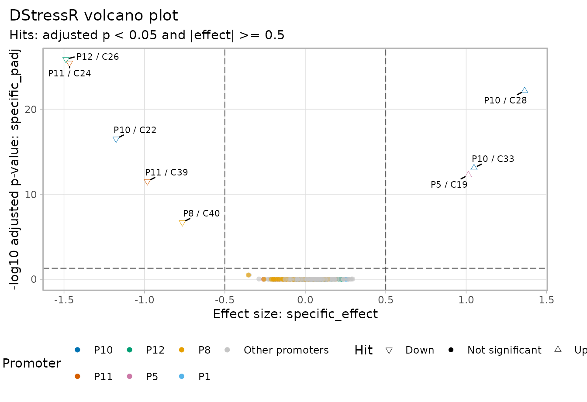
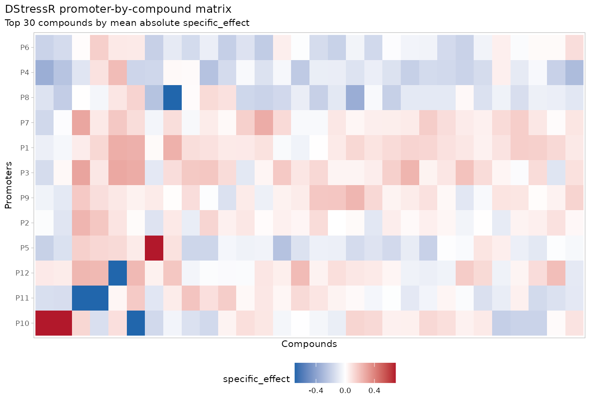

DStressR models promoter-activity responses in
high-throughput chemical genomics screens. The package is designed as
the stress-response counterpart to DGrowthR:
DGrowthR handles growth-curve modeling, while DStressR handles
promoter-compound effects after accounting for growth and technical
structure.
This vignette uses a small simulated screen so that the model-based
named workflow can be run without private data files. DStressR also
exposes compatibility workflows through the same entry point:
workflow = "median_polish" for the original median-polish
p-value workflow and workflow = "empty_vector_control" for
the empty-vector-control workflow.
Input files and table shape
DStressR expects a long measurement table with one row per measured promoter-compound-replicate observation. In a complete rectangular screen, the row count is approximately:
n_promoters x (n_compound_wells + n_control_wells) x n_replicatesThe table may contain additional rows when the same screen is repeated across batches, library plates, measurement plates, or experimental days. The important point is that these technical covariates remain in the table so they can be modeled rather than accidentally averaged away.
The required biological and technical information is:
- promoter or reporter construct
- compound or library-well identifier
- negative-control compound, usually
DMSO - luminescence summary
- growth summary
- replicate and optional technical covariates such as batch or plate
Column names are not fixed. They are mapped explicitly in
prepare_assay().
For the original Campylobacter promoter-library workflow, the
convenience helper read_campylobacter_expression() joins
two exported files:
-
expression_values.tsv.gz: one row per promoter-library-well-replicate observation. It must contain eithersrn_codeor bothlibplateandwell, plus the promoter, luminescence, growth, and technical columns used downstream. -
LibMap.txt: one row per compound/library well with columnsLibrary plate,Well,ProductName, andCatalog Number.
The helper reconstructs the library-well key as
paste0("lp", Library plate, "_", Well) for
LibMap.txt, joins the compound annotations onto the
expression table, and returns a long table with the same number of rows
as expression_values.tsv.gz.
expression_df <- read_campylobacter_expression(
expression_file = "expression_values.tsv.gz",
libmap_file = "LibMap.txt"
)
assay <- prepare_assay(
expression_df,
promoter = "promoter",
compound = "srn_code",
control = "DMSO",
lux = "LUX.AUC_16",
growth = "od_16h.measured",
batch = "batch",
plate = "libplate",
replicate = "replicate"
)Simulate a chemical-genomics screen
library(DStressR)
screen <- simulate_screen(
n_promoters = 12,
n_compounds = 40,
n_replicates = 3,
seed = 1
)
head(screen)
#> promoter compound replicate batch od_16h.measured LUX.AUC_16 truth_specific
#> 1 P1 DMSO r1 b2 0.4116687 293.9048 0
#> 2 P2 DMSO r1 b2 0.3906898 432.5738 0
#> 3 P3 DMSO r1 b2 0.3333026 235.1525 0
#> 4 P4 DMSO r1 b2 0.3000495 850.4902 0
#> 5 P5 DMSO r1 b2 0.3410560 346.1222 0
#> 6 P6 DMSO r1 b2 0.5140298 378.6924 0
#> truth_global
#> 1 0
#> 2 0
#> 3 0
#> 4 0
#> 5 0
#> 6 0The simulated table contains one row per promoter-compound-replicate well. It includes luminescence, growth, batch, replicate, and hidden truth columns used only to check the example.
names(screen)
#> [1] "promoter" "compound" "replicate" "batch"
#> [5] "od_16h.measured" "LUX.AUC_16" "truth_specific" "truth_global"Prepare the assay
prepare_assay() converts luminescence and growth
summaries into a growth-adjusted log2 response. By default, DStressR
estimates promoter-specific growth exponents from DMSO control wells and
shrinks them toward a global control-well slope.
assay <- prepare_assay(
screen,
promoter = "promoter",
compound = "compound",
control = "DMSO",
lux = "LUX.AUC_16",
growth = "od_16h.measured",
batch = "batch",
replicate = "replicate"
)
attr(assay, "destress")$growth_exponent_fit
#> promoter control_n log_growth_sd alpha_raw alpha_raw_se alpha_raw_df
#> 1 P1 3 0.2789856 NA NA NA
#> 2 P10 3 0.3303240 NA NA NA
#> 3 P11 3 0.2469301 NA NA NA
#> 4 P12 3 0.1029985 NA NA NA
#> 5 P2 3 0.1738257 NA NA NA
#> 6 P3 3 0.2105313 NA NA NA
#> 7 P4 3 0.2653313 NA NA NA
#> 8 P5 3 0.2447480 NA NA NA
#> 9 P6 3 0.1725935 NA NA NA
#> 10 P7 3 0.2267275 NA NA NA
#> 11 P8 3 0.2954055 NA NA NA
#> 12 P9 3 0.1714372 NA NA NA
#> alpha_covariates alpha_global alpha_global_se alpha_global_covariates
#> 1 0.8875006 0.1613071 promoter;batch;replicate
#> 2 0.8875006 0.1613071 promoter;batch;replicate
#> 3 0.8875006 0.1613071 promoter;batch;replicate
#> 4 0.8875006 0.1613071 promoter;batch;replicate
#> 5 0.8875006 0.1613071 promoter;batch;replicate
#> 6 0.8875006 0.1613071 promoter;batch;replicate
#> 7 0.8875006 0.1613071 promoter;batch;replicate
#> 8 0.8875006 0.1613071 promoter;batch;replicate
#> 9 0.8875006 0.1613071 promoter;batch;replicate
#> 10 0.8875006 0.1613071 promoter;batch;replicate
#> 11 0.8875006 0.1613071 promoter;batch;replicate
#> 12 0.8875006 0.1613071 promoter;batch;replicate
#> alpha_prior_var alpha_prior_sd alpha_shrunk alpha_shrunk_se alpha_fixed_one
#> 1 0.02601998 0.1613071 0.8875006 0.1613071 1
#> 2 0.02601998 0.1613071 0.8875006 0.1613071 1
#> 3 0.02601998 0.1613071 0.8875006 0.1613071 1
#> 4 0.02601998 0.1613071 0.8875006 0.1613071 1
#> 5 0.02601998 0.1613071 0.8875006 0.1613071 1
#> 6 0.02601998 0.1613071 0.8875006 0.1613071 1
#> 7 0.02601998 0.1613071 0.8875006 0.1613071 1
#> 8 0.02601998 0.1613071 0.8875006 0.1613071 1
#> 9 0.02601998 0.1613071 0.8875006 0.1613071 1
#> 10 0.02601998 0.1613071 0.8875006 0.1613071 1
#> 11 0.02601998 0.1613071 0.8875006 0.1613071 1
#> 12 0.02601998 0.1613071 0.8875006 0.1613071 1
#> alpha_diff_from_one
#> 1 -0.1124994
#> 2 -0.1124994
#> 3 -0.1124994
#> 4 -0.1124994
#> 5 -0.1124994
#> 6 -0.1124994
#> 7 -0.1124994
#> 8 -0.1124994
#> 9 -0.1124994
#> 10 -0.1124994
#> 11 -0.1124994
#> 12 -0.1124994To reproduce the older fixed-ratio style response,
growth_exponent = 1 gives the familiar
log2(luminescence / growth) scale.
assay_fixed <- prepare_assay(
screen,
promoter = "promoter",
compound = "compound",
control = "DMSO",
lux = "LUX.AUC_16",
growth = "od_16h.measured",
growth_exponent = 1,
batch = "batch",
replicate = "replicate"
)Fit the model workflow
fit_workflow(..., workflow = "model") fits promoter and
compound effects while accounting for technical covariates. The result
table reports both the DMSO-relative total effect and the
promoter-specific effect after subtracting the compound-wide effect.
fit <- fit_workflow(
assay,
workflow = "model",
technical = c("batch", "replicate"),
empirical_bayes = TRUE
)
tab <- results(fit)
tab <- adjust_pvalues(tab)
head(tab)
#> compound promoter total_effect total_se total_statistic total_pvalue
#> 1 C1 P1 -0.42759639 0.1281559 -3.3365325 0.0008801098
#> 13 C10 P1 0.11008012 0.1281559 0.8589546 0.3905751788
#> 25 C11 P1 -0.40523361 0.1281559 -3.1620358 0.0016147508
#> 37 C12 P1 0.28971870 0.1281559 2.2606736 0.0239977008
#> 49 C13 P1 0.04093903 0.1281559 0.3194471 0.7494554690
#> 61 C14 P1 -0.06382475 0.1281559 -0.4980242 0.6185784855
#> additive_total_effect additive_total_se global_effect specific_effect
#> 1 -0.54331614 0.05251494 -0.54331614 0.11571976
#> 13 0.03412472 0.05251494 0.03412472 0.07595540
#> 25 -0.53613209 0.05251494 -0.53613209 0.13089849
#> 37 0.20219166 0.05251494 0.20219166 0.08752703
#> 49 0.01268673 0.05251494 0.01268673 0.02825231
#> 61 -0.01999624 0.05251494 -0.01999624 -0.04382851
#> specific_se specific_statistic specific_pvalue total_padj specific_padj
#> 1 0.1281559 0.9029607 0.3667682 0.01107970 0.9737499
#> 13 0.1281559 0.5926796 0.5535320 0.61067129 0.9737499
#> 25 0.1281559 1.0214002 0.3073164 0.01684957 0.9737499
#> 37 0.1281559 0.6829730 0.4947850 0.11359472 0.9737499
#> 49 0.1281559 0.2204526 0.8255645 0.86893388 0.9737499
#> 61 0.1281559 -0.3419937 0.7324288 0.79178046 0.9737499
#> specific_padj_by_promoter
#> 1 0.8462255
#> 13 0.8462255
#> 25 0.8462255
#> 37 0.8462255
#> 49 0.9435023
#> 61 0.8877925The key columns are:
-
total_effect: DMSO-relative response for the promoter-compound pair. -
global_effect: average compound-wide response across promoters. -
specific_effect: promoter-specific deviation from the compound-wide effect. -
specific_pvalueandspecific_padj: test and BH-adjusted p-value.
The direct fitting functions remain available for existing scripts,
but fit_workflow() makes the selected statistical path
explicit and is the recommended entry point for new analyses.
Call hits
hits <- call_hits(
tab,
fdr = 0.05,
lfc = 0.5,
effect = "specific_effect",
padj = "specific_padj"
)
table(hits$hit)
#>
#> Downregulated Not DE Upregulated
#> 5 472 3
head(
hits[order(hits$specific_padj, -abs(hits$specific_effect)), ],
10
)
#> compound promoter total_effect total_se total_statistic total_pvalue
#> 220 C26 P12 -1.3710711 0.1281559 -10.698461 2.418737e-25
#> 195 C24 P11 -1.6735292 0.1281559 -13.058540 4.726357e-36
#> 242 C28 P10 1.4895866 0.1281559 11.623237 2.371113e-29
#> 170 C22 P10 -1.6257162 0.1281559 -12.685456 2.948783e-34
#> 314 C33 P10 0.9705429 0.1281559 7.573141 8.390830e-14
#> 128 C19 P5 1.0692457 0.1281559 8.343319 2.427872e-16
#> 387 C39 P11 -1.2130464 0.1281559 -9.465395 2.098332e-20
#> 419 C40 P8 -0.7506326 0.1281559 -5.857182 6.417479e-09
#> 107 C17 P8 -0.2232267 0.1281559 -1.741837 8.185016e-02
#> 247 C28 P4 -0.2227294 0.1281559 -1.737956 8.253198e-02
#> additive_total_effect additive_total_se global_effect specific_effect
#> 220 0.11664730 0.05251494 0.11664730 -1.4877184
#> 195 -0.20714467 0.05251494 -0.20714467 -1.4663846
#> 242 0.12623694 0.05251494 0.12623694 1.3633497
#> 170 -0.44954782 0.05251494 -0.44954782 -1.1761684
#> 314 -0.07827537 0.05251494 -0.07827537 1.0488183
#> 128 0.05542205 0.05251494 0.05542205 1.0138237
#> 387 -0.23137805 0.05251494 -0.23137805 -0.9816684
#> 419 0.01355452 0.05251494 0.01355452 -0.7641871
#> 107 0.13065534 0.05251494 0.13065534 -0.3538820
#> 247 0.12623694 0.05251494 0.12623694 -0.3489663
#> specific_se specific_statistic specific_pvalue total_padj specific_padj
#> 220 0.1281559 -11.608660 2.754737e-29 2.902484e-23 1.322274e-26
#> 195 0.1281559 -11.442192 1.511721e-28 2.268651e-33 3.628130e-26
#> 242 0.1281559 10.638211 4.324175e-25 3.793781e-27 6.918680e-23
#> 170 0.1281559 -9.177636 2.535797e-19 7.077080e-32 3.042956e-17
#> 314 0.1281559 8.183924 8.466026e-16 5.753712e-12 8.127385e-14
#> 128 0.1281559 7.910861 6.860599e-15 1.942298e-14 5.488479e-13
#> 387 0.1281559 -7.659954 4.447819e-14 2.014399e-18 3.049933e-12
#> 419 0.1281559 -5.962948 3.452276e-09 3.850488e-07 2.071366e-07
#> 107 0.1281559 -2.761340 5.863824e-03 2.470948e-01 3.127373e-01
#> 247 0.1281559 -2.722982 6.584238e-03 2.475960e-01 3.160434e-01
#> specific_padj_by_promoter hit
#> 220 1.101895e-27 Downregulated
#> 195 6.046883e-27 Downregulated
#> 242 1.729670e-23 Upregulated
#> 170 5.071593e-18 Downregulated
#> 314 1.128804e-14 Upregulated
#> 128 2.744240e-13 Upregulated
#> 387 8.895637e-13 Downregulated
#> 419 1.380910e-07 Downregulated
#> 107 1.172765e-01 Not DE
#> 247 2.633695e-01 Not DEIn real screens, the FDR cutoff should be paired with domain knowledge and diagnostics. For DMSO-rich designs, empirical replicate/permutation p-values can be used as an additional calibration check.
Visualize the screen
The standard volcano plot labels the strongest promoter-compound pairs.
plot_volcano(
hits,
effect = "specific_effect",
padj = "specific_padj",
fdr = 0.05,
lfc = 0.5,
top_n = 8,
top_promoters = 6
)
A response heatmap gives a matrix-level view of the promoter-compound response surface.
plot_response_heatmap(
hits,
value = "specific_effect",
top_n_compounds = 30
)
For broader screens, clustered heatmaps help reveal compound and promoter groups with similar response profiles.
plot_response_clustered_heatmap(
hits,
value = "specific_effect",
top_n_compounds = 30,
title = "Clustered DStressR response map"
)Optional DGrowthR handoff
The current default hit model uses the exported growth summary column
supplied to prepare_assay(). If growth curves have already
been modeled with DGrowthR, the DGrowthR-derived growth parameter can be
joined explicitly before assay preparation.
screen2 <- add_dgrowthr_growth(
screen,
object = dgrowthr_fit,
by = "curve_id",
model_covariate = "curve_id",
growth_metric = "OD_16",
output = "dgrowthr_od16"
)
assay2 <- prepare_assay(
screen2,
promoter = "promoter",
compound = "compound",
control = "DMSO",
lux = "LUX.AUC_16",
growth = "dgrowthr_od16",
batch = "batch",
replicate = "replicate"
)This explicit handoff keeps the selected DStressR workflow reproducible, while making DGrowthR-based sensitivity analyses straightforward.